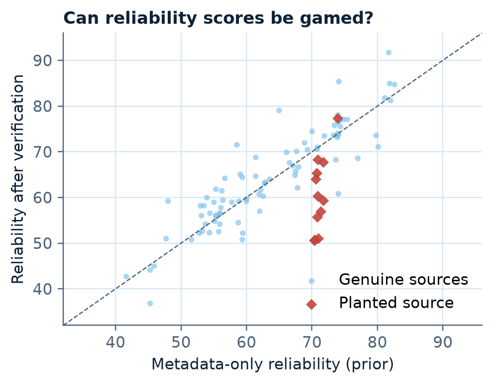

With full sources, agents already cite faithfully: about 98% of cited claims supported in every condition.

Claim-level verification and tamper-evident provenance for AI decision support, tested against planted false sources.
Nikhil Sharma · Decision AI
People now ask AI which phone, insurer or university to choose. Can trust infrastructure make those answers verifiable, for people and for the AI itself?
Dashed: deterministic code. Solid: language judgement. The same layer runs in the web app and as a tool an AI agent can call.



Code, data, prompts and the full report: github.com/imthegoodboy/Decision-AI
Built during the AI x Epistemics Research Sprint, November 2026.